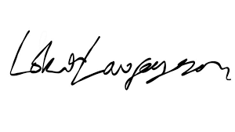

Name of the Candidate
Loki Laufeyson
Name of the Parent/Guardian
Frigga Laufeyson
Registration No.
XXXXXXXXXX
Date of Birth
dd/mm/yyyy
Test Paper
Computer Science and Information Technology (CS)
Date of Examination
February 1, 2025
GATE Score
460
*Marks out of 100
39.97

All India Rank (AIR) in the test paper:
9448
Number of candidates appeared for the test paper:
170825
Qualifying Marks
General: 29.2
EWS/OBC-NCL: 26.2
SC/ST/PwD: 19.4
A candidate is considered qualified if the marks secured are greater than or equal to the qualifying marks mentioned for the category, for which a valid category certificate, if applicable, must be produced along with this Score Card.
This Score Card is valid up to 31st March 2028.
Prof. P. Arunagiri

Unique ID: 07abeb8141e2fbcefe8fe6118fed645ef
Valid up to 31st March 2028